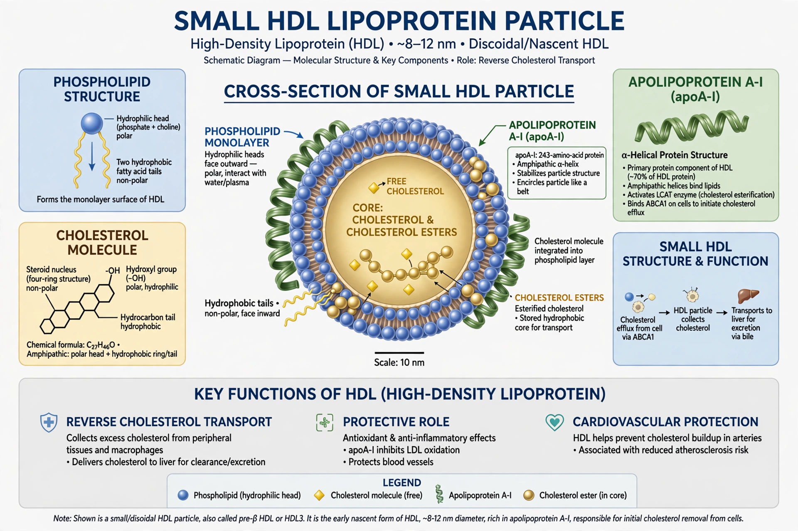

From Wikipedia, the free encyclopedia
| High-density lipoprotein | |
|---|---|
| Abbreviation | HDL |
| Density | 1.063–1.210 g/mL |
| Diameter | 5–17 nm |
| Major apolipoprotein | Apolipoprotein A-I |
High-density lipoprotein (HDL) is one of the five major groups of lipoprotein. HDL particles transport fat molecules and cholesterol from the body's tissues back to the liver — a process known as reverse cholesterol transport. Because higher HDL levels are associated with lower risk of atherosclerosis, HDL cholesterol is commonly described as "good cholesterol".

HDL is the smallest and densest of the lipoproteins. Its major apolipoprotein is apolipoprotein A-I (ApoA-I). HDL particles begin as nascent, disc-shaped particles that mature into spheres as they accumulate cholesterol.
HDL removes excess cholesterol from cells — including arterial-wall macrophages — and carries it to the liver for excretion. It also has anti-inflammatory, antioxidant and antithrombotic properties.
Epidemiological studies link higher HDL cholesterol with lower cardiovascular risk, though clinical trials of drugs that raise HDL (such as CETP inhibitors) have generally failed to reduce cardiovascular events, casting doubt on a direct causal role.
Aerobic exercise, smoking cessation, moderate alcohol consumption and weight loss are associated with higher HDL. Niacin raises HDL pharmacologically.
See also: Low-density lipoprotein, Lipoprotein.